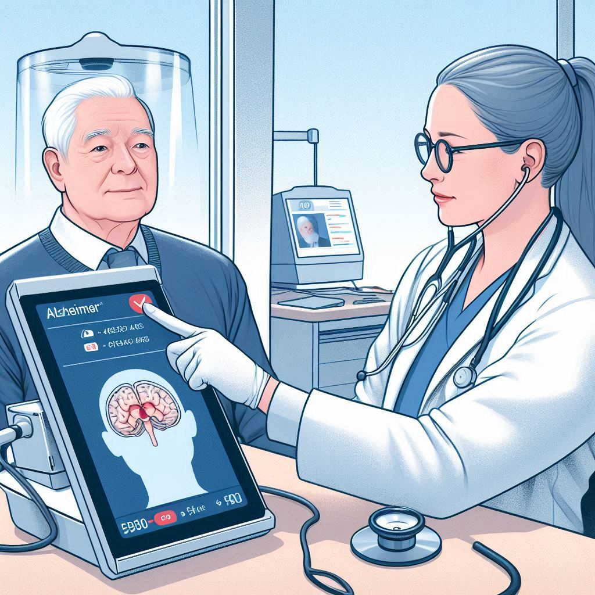

IA Predice el Alzheimer Años Antes de los Síntomas
Publicado el 15 de noviembre de 2024
Científicos han desarrollado un nuevo sistema de IA capaz de predecir la aparición del Alzheimer con años de antelación, analizando patrones sutiles en escáneres cerebrales. Esta innovación abre la puerta a intervenciones tempranas y tratamientos más efectivos.
El algoritmo, entrenado con miles de imágenes cerebrales, identifica cambios microscópicos que preceden a los síntomas clínicos del Alzheimer. Esto permite a los médicos iniciar terapias preventivas antes de que el daño cerebral sea irreversible.
Este avance representa un gran paso en la lucha contra esta enfermedad neurodegenerativa, ofreciendo esperanza a millones de personas en todo el mundo.